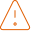

Contaminación
Cada año, más de 8 millones de toneladas de plástico terminan en el océano. Los derrames de petróleo, los microplásticos y los residuos químicos envenenan la cadena alimentaria marina.
Buscar

Los ecosistemas marinos enfrentan amenazas sin precedentes...
Cada año, más de 8 millones de toneladas de plástico terminan en el océano. Los derrames de petróleo, los microplásticos y los residuos químicos envenenan la cadena alimentaria marina.
El aumento de la temperatura oceánica provoca el blanqueamiento de corales, la acidificación del agua y la alteración de las corrientes, afectando a miles de especies.
La pesca excesiva e insostenible ha reducido las poblaciones de muchas especies a niveles críticos, desequilibrando ecosistemas enteros y amenazando la seguridad alimentaria.
¿Cómo podemos ayudar?
Cifras reales que reflejan el estado crítico de nuestros océanos
terminan en los océanos cada año
ya se ven afectadas por la contaminación
desaparecieron o están gravemente dañados
Animales marinos que podrían desaparecer si no actuamos ahora


Quedan menos de 10 ejemplares en el mundo
Tu acción hoy define su futuro
Sumate al cambio y formá parte de nuestra red de voluntariado y ayudanos a proteger los océanos.